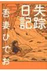

吾妻ひでお（あずま ひでお）
失踪日記

01自分が子供の頃が活躍されているレジェンド。生きにくい世界なんだろうと思います
データベース
| タイトル | ISBN | 絵 | 作 | 発行 | URL | 紙 | 電子 | その他1 | その他2 |
|---|---|---|---|---|---|---|---|---|---|
| 失踪日記 | 9784872575330 | 吾妻ひでお | イースト・プレス | url | Y | 193 |

01自分が子供の頃が活躍されているレジェンド。生きにくい世界なんだろうと思います
| タイトル | ISBN | 絵 | 作 | 発行 | URL | 紙 | 電子 | その他1 | その他2 |
|---|---|---|---|---|---|---|---|---|---|
| 失踪日記 | 9784872575330 | 吾妻ひでお | イースト・プレス | url | Y | 193 |